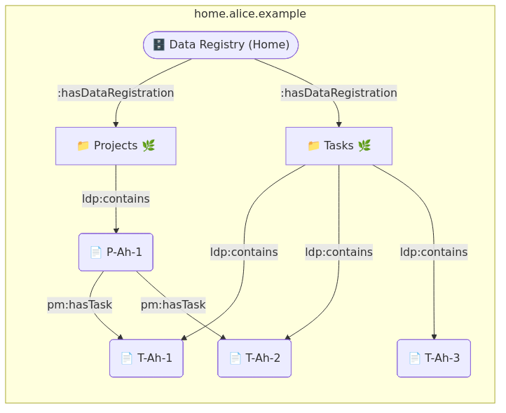
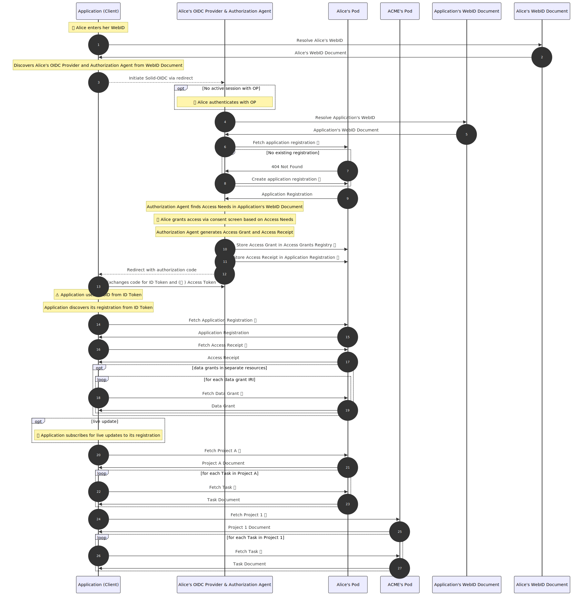

1. Introduction

2. Data
All turtle and shapetree code snippets in this primer will assume following prefixes.
PREFIX xsd: <http://www.w3.org/2001/XMLSchema#> PREFIX rdf: <http://www.w3.org/1999/02/22-rdf-syntax-ns#> PREFIX rdfs: <http://www.w3.org/2000/01/rdf-schema#> PREFIX dcterms: <http://purl.org/dc/terms/> PREFIX ldp: <http://www.w3.org/ns/ldp#> PREFIX solid: <http://www.w3.org/ns/solid/terms#> PREFIX acl: <http://www.w3.org/ns/auth/acl#> PREFIX interop: <http://www.w3.org/ns/solid/interop#> PREFIX shapetree: <http://www.w3.org/ns/shapetree#> # Fictional PREFIX solidshapes: <https://solidshapes.example/shapes/> PREFIX solidtrees: <https://solidshapes.example/trees/> PREFIX pm: <https://vocab.example/project-management/> PREFIX tbd: <https://tbd.example/> # ACME PREFIX acme: <https://acme.example/> PREFIX acme-rnd: <https://rnd.acme.example/> PREFIX acme-finance: <https://finance.acme.example/> # Alice PREFIX alice: <https://alice.example/> PREFIX alice-auth: <https://auth.alice.example/> PREFIX alice-pro: <https://pro.alice.example/> PREFIX alice-home: <https://home.alice.example/> # Bob PREFIX bob: <https://bob.example/>
All ShExC code snippets will asssume
PREFIX xsd : <http://www.w3.org/2001/XMLSchema#> PREFIX rdfs : <http://www.w3.org/2000/01/rdf-schema#> PREFIX solidshapes : <https://solidshapes.example/shapes/> PREFIX tbd : <https://tbd.example/> PREFIX pm : <https://vocab.example/project-management/>
2.1. solidshapes.example
2.1.1. Shapes
solid/data-interoperability-panel/131Define usage of Shape Path for Data Grant with InheritInstances scope
solidshapes : ProjectShape { a [ pm : Project ] ; rdfs : label xsd : string ; tbd : hasReferencesList @ <#TaskReferencesList> ; tbd : hasReferencesList @ <#MilestoneReferencesList> } <#TaskReferencesList> { a [ tbd : ReferencesList ] ; tbd : referencedTree solidtrees : Task . } <#MilestoneReferencesList> { a [ tbd : ReferencesList ] ; tbd : referencedTree solidtrees : Milestone . }
solidshapes : TaskShape { a [ pm : Task ] ; rdfs : label xsd : string }
2.1.2. Shape Trees
solid/data-interoperability-panel/131Define usage of Shape Path for Data Grant with InheritInstances scope
solidtrees : Project a shapetree : ShapeTree ; shapetree : expectsType shapetree : ShapeTreeResource ; shapetree : validatedBy solidshapes : Project ; shapetree : references uuid : 54b5e4f6-c6b5-4c9a-b885-cbf69d08370d . uuid : 54b5e4f6-c6b5-4c9a-b885-cbf69d08370d shapetree : hasShapeTree solidtrees : Task ; shapetree : viaPredicate pm : hasTask .
solidtrees : Task a shapetree : ShapeTree ; shapetree : expectsType shapetree : ShapeTreeResource ; shapetree : validatedBy solidshapes : Task .
2.2. acme.example
acme : \#corp a interop : Agent .
2.3. rnd.acme.example
2.3.1. Data Registrations
acme-rnd : 6e3b9ac3-254f-41cc-adbe-3f3293fd0475 a interop : DataRegistration ; interop : registeredBy <https://garry.example/#id> ; interop : registeredWith <https://solidmin.example/#app> ; interop : registeredAt "2020-08-23T21:12:27.000Z" ^^ xsd : dateTime ; interop : registeredShapeTree solidtrees : Project ; ldp : contains acme-rnd : 02c8217e-9933-4681-9fe3-f9d207a77a91\#project , acme-rnd : 18e75c28-3649-4c24-9e58-530df3813ca3\#project .
acme-rnd : f56235d6-4e58-4492-97ec-42d3b5bfa539 a interop : DataRegistration ; interop : registeredBy <https://garry.example/#id> ; interop : registeredWith <https://solidmin.example/#app> ; interop : registeredAt "2020-08-23T21:12:45.000Z" ^^ xsd : dateTime ; interop : registeredShapeTree solidtrees : Task ; ldp : contains acme-rnd : a51a89f5-0d4d-4213-9a9e-ea2dbadc56ea\#task , acme-rnd : b51fb352-a098-4681-81aa-b655b9434932\#task , acme-rnd : d1a7b2ff-a021-40f1-8c16-ab56407a0740\#task , acme-rnd : 58814556-9955-482f-9d1f-0a89677f9881\#task .
2.3.2. Data Instances
solid/data-interoperability-panel/131Define usage of Shape Path for Data Grant with InheritInstances scope
acme-rnd : 02c8217e-9933-4681-9fe3-f9d207a77a91\#project a pm : Project ; rdfs : label "P-Ar-1" ; tbd : hasReferenceList acme-rnd : 47981f00-75d9-406b-8bbc-5342b050e1e1 . acme-rnd : 47981f00-75d9-406b-8bbc-5342b050e1e1 a tbd : ReferencesList ; tbd : referencedTree solidtrees : Task .
acme-rnd : 47981f00-75d9-406b-8bbc-5342b050e1e1 a tbd : ReferencesList ; tbd : referencesOf acme-rnd : 02c8217e-9933-4681-9fe3-f9d207a77a91\#project ; tbd : referencedTree solidtrees : Task ; tbd : referencePredicate pm : hasTask . acme-rnd : 02c8217e-9933-4681-9fe3-f9d207a77a91\#project pm : hasTask acme-rnd : a51a89f5-0d4d-4213-9a9e-ea2dbadc56ea\#task , acme-rnd : b51fb352-a098-4681-81aa-b655b9434932\#task .
acme-rnd : 18e75c28-3649-4c24-9e58-530df3813ca3\#project a pm : Project ; rdfs : label "P-Ar-2" ; tbd : hasReferenceList acme-rnd : 77a5861c-2898-4134-b9a2-8c7f0fed65ac . acme-rnd : 77a5861c-2898-4134-b9a2-8c7f0fed65ac a tbd : ReferencesList ; tbd : referencedTree solidtrees : Task .
acme-rnd : 77a5861c-2898-4134-b9a2-8c7f0fed65ac a tbd : ReferencesList ; tbd : referencesOf acme-rnd : 18e75c28-3649-4c24-9e58-530df3813ca3\#project ; tbd : referencedTree solidtrees : Task ; tbd : referencePredicate pm : hasTask . acme-rnd : 18e75c28-3649-4c24-9e58-530df3813ca3\#project pm : hasTask acme-rnd : d1a7b2ff-a021-40f1-8c16-ab56407a0740\#task , acme-rnd : 58814556-9955-482f-9d1f-0a89677f9881\#task .
acme-rnd : a51a89f5-0d4d-4213-9a9e-ea2dbadc56ea\#task a pm : Task ; rdfs : label "T-Ar-1" .
acme-rnd : b51fb352-a098-4681-81aa-b655b9434932\#task a pm : Task ; rdfs : label "T-Ar-2" .
acme-rnd : d1a7b2ff-a021-40f1-8c16-ab56407a0740\#task a pm : Task ; rdfs : label "T-Ar-3" .
acme-rnd : 58814556-9955-482f-9d1f-0a89677f9881\#task a pm : Task ; rdfs : label "T-Ar-4" .
2.4. finance.acme.example
2.4.1. Data Registrations
acme-finance : 882eea27-b968-44e7-b8f5-87b234089057 a interop : DataRegistration ; interop : registeredBy <https://garry.example/#id> ; interop : registeredWith <https://solidmin.example/#app> ; interop : registeredAt "2020-08-23T21:12:27.000Z" ^^ xsd : dateTime ; interop : registeredShapeTree solidtrees : Project ; ldp : contains acme-finance : e7a5a287-9481-417e-91bf-40ea738fa737\#project , acme-finance : c2883a4d-cece-43c2-9568-5f0aa1ac64be\#project .
acme-finance : 4f3fbf70-49df-47ce-a573-dc54366b01ad a interop : DataRegistration ; interop : registeredBy <https://garry.example/#id> ; interop : registeredWith <https://solidmin.example/#app> ; interop : registeredAt "2020-08-23T21:12:45.000Z" ^^ xsd : dateTime ; interop : registeredShapeTree solidtrees : Task ; ldp : contains acme-finance : ea7a7621-b2fd-41b1-8992-c85d624f6bcc\#task , acme-finance : ab6fd32b-ce6f-4c1e-baf3-0e42f1aae7e5\#task , acme-finance : e44e3ddc-a383-4a98-ad59-a3153eea5aaf\#task .
2.4.2. Data Instances
solid/data-interoperability-panel/131Define usage of Shape Path for Data Grant with InheritInstances scope
acme-finance : e7a5a287-9481-417e-91bf-40ea738fa737\#project a pm : Project ; rdfs : label "P-Af-1" ; tbd : hasReferenceList acme-finance : 86582c5c-d8ce-4b21-82af-a33ba32b81f8 . acme-finance : 86582c5c-d8ce-4b21-82af-a33ba32b81f8 a tbd : ReferencesList ; tbd : referencedTree solidtrees : Task .
acme-finance : 86582c5c-d8ce-4b21-82af-a33ba32b81f8 a tbd : ReferencesList ; tbd : referencesOf acme-finance : e7a5a287-9481-417e-91bf-40ea738fa737\#project ; tbd : referencedTree solidtrees : Task ; tbd : referencePredicate pm : hasTask . acme-finance : e7a5a287-9481-417e-91bf-40ea738fa737\#project pm : hasTask acme-finance : ea7a7621-b2fd-41b1-8992-c85d624f6bcc\#task , acme-finance : ab6fd32b-ce6f-4c1e-baf3-0e42f1aae7e5\#task .
acme-finance : c2883a4d-cece-43c2-9568-5f0aa1ac64be\#project a pm : Project ; rdfs : label "P-Af-2" ; tbd : hasReferenceList acme-finance : a2b38a9b-f115-4865-af3a-8ea3c86e0bec . acme-finance : a2b38a9b-f115-4865-af3a-8ea3c86e0bec a tbd : ReferencesList ; tbd : referencedTree solidtrees : Task .
acme-finance : a2b38a9b-f115-4865-af3a-8ea3c86e0bec a tbd : ReferencesList ; tbd : referencesOf acme-finance : c2883a4d-cece-43c2-9568-5f0aa1ac64be\#project ; tbd : referencedTree solidtrees : Task ; tbd : referencePredicate pm : hasTask . acme-finance : c2883a4d-cece-43c2-9568-5f0aa1ac64be\#project pm : hasTask acme-finance : e44e3ddc-a383-4a98-ad59-a3153eea5aaf\#task .
acme-finance : ea7a7621-b2fd-41b1-8992-c85d624f6bcc\#task a pm : Task ; rdfs : label "T-Af-1" .
acme-finance : ab6fd32b-ce6f-4c1e-baf3-0e42f1aae7e5\#task a pm : Task ; rdfs : label "T-Af-2" .
acme-finance : e44e3ddc-a383-4a98-ad59-a3153eea5aaf\#task a pm : Task ; rdfs : label "T-Af-3" .
2.5. auth.acme.example
2.5.1. Access Grant
acme-auth : 7b6915b4-c135-4025-899c-ce53875bffe2 a interop : AccessGrant ; interop : registeredBy <https://dan.example/#id> ; interop : registeredWith <https://auth.acme.example/#agent> ; interop : registeredAt "2020-09-05T06:15:01Z" ^^ xsd : dateTime ; interop : updatedAt "2020-09-05T06:15:01Z" ^^ xsd : dateTime ; interop : providedAt "2020-09-05T06:15:01Z" ^^ xsd : dateTime ; interop : fromAgent <https://acme.example/#corp> ; interop : viaAgent <https://acme.example/#corp> ; interop : hasAccessGrantSubject acme-auth : 7b6915b4-c135-4025-899c-ce53875bffe2\#grant-subject ; interop : hasDataGrant acme-auth : 7b6915b4-c135-4025-899c-ce53875bffe2\#data-grant-project-rnd , acme-auth : 7b6915b4-c135-4025-899c-ce53875bffe2\#data-grant-task-rnd , acme-auth : 7b6915b4-c135-4025-899c-ce53875bffe2\#data-grant-project-finance , acme-auth : 7b6915b4-c135-4025-899c-ce53875bffe2\#data-grant-task-finance . acme-auth : 7b6915b4-c135-4025-899c-ce53875bffe2\#grant-subject a interop : AccessGrantSubject ; interop : accessByAgent <https://alice.example/#id> . acme-auth : 7b6915b4-c135-4025-899c-ce53875bffe2\#data-grant-project-rnd a interop : DataGrant ; interop : registeredShapeTree solidtrees : Project ; interop : hasDataRegistration acme-rnd : 6e3b9ac3-254f-41cc-adbe-3f3293fd0475 ; interop : accessMode acl : Read , acl : Write ; interop : scopeOfGrant interop : AllInstances . acme-auth : 7b6915b4-c135-4025-899c-ce53875bffe2\#data-grant-task-rnd a interop : DataGrant ; interop : registeredShapeTree solidtrees : Task ; interop : hasDataRegistration acme-rnd : f56235d6-4e58-4492-97ec-42d3b5bfa539 ; interop : accessMode acl : Read , acl : Write ; interop : scopeOfGrant interop : InheritInstances ; interop : inheritsFromGrant acme-auth : 7b6915b4-c135-4025-899c-ce53875bffe2\#data-grant-project-rnd . acme-auth : 7b6915b4-c135-4025-899c-ce53875bffe2\#data-grant-project-finance a interop : DataGrant ; interop : registeredShapeTree solidtrees : Project ; interop : hasDataRegistration acme-finance : 882eea27-b968-44e7-b8f5-87b234089057 ; interop : accessMode acl : Read , acl : Write ; interop : scopeOfGrant interop : AllInstances . acme-auth : 7b6915b4-c135-4025-899c-ce53875bffe2\#data-grant-task-finance a interop : DataGrant ; interop : registeredShapeTree solidtrees : Task ; interop : hasDataRegistration acme-finance : 4f3fbf70-49df-47ce-a573-dc54366b01ad ; interop : accessMode acl : Read , acl : Write ; interop : scopeOfGrant interop : InheritInstances ; interop : inheritsFromGrant acme-auth : 7b6915b4-c135-4025-899c-ce53875bffe2\#data-grant-project-finance .
2.6. omni.example
omni : \#corp a interop : Agent .
2.7. na.omni.example
2.7.1. Data Registrations
omni-na : 823e7976-13cc-4641-be0f-a4a78c2d7140 a interop : DataRegistration ; interop : registeredBy <https://erica.example/#id> ; interop : registeredWith <https://authbot.example/#bot> ; interop : registeredAt "2020-08-23T21:12:45.000Z" ^^ xsd : dateTime ; interop : registeredShapeTree solidtrees : Project ; ldp : contains omni-na : 30da889a-d65f-461d-ae52-50e19c77ed79\#project .
omni-na : 6b800a8a-1d53-45b5-81bd-e76f1a87bdd3 a interop : DataRegistration ; interop : registeredBy <https://erica.example/#id> ; interop : registeredWith <https://authbot.example/#bot> ; interop : registeredAt "2020-08-23T21:12:45.000Z" ^^ xsd : dateTime ; interop : registeredShapeTree solidtrees : Task ; ldp : contains omni-na : 79a1cc9e-e498-4a66-a2f8-9957a64e9488\#task , omni-na : d2748fbd-565a-4a52-8709-b07a39f1fd4a\#task .
2.7.2. Data Instances
solid/data-interoperability-panel/131Define usage of Shape Path for Data Grant with InheritInstances scope
omni-na : 30da889a-d65f-461d-ae52-50e19c77ed79\#project a pm : Project ; rdfs : label "P-On-1" ; tbd : hasReferenceList omni-na : f6eb4906-91ca-4b96-aba0-7d6d40a4b6a3 . omni-na : f6eb4906-91ca-4b96-aba0-7d6d40a4b6a3 a tbd : ReferencesList ; tbd : referencedTree solidtrees : Task .
omni-na : f6eb4906-91ca-4b96-aba0-7d6d40a4b6a3 a tbd : ReferencesList ; tbd : referencesOf omni-na : 30da889a-d65f-461d-ae52-50e19c77ed79\#project ; tbd : referencedTree solidtrees : Task ; tbd : referencePredicate pm : hasTask . omni-na : 30da889a-d65f-461d-ae52-50e19c77ed79\#project pm : hasTask omni-na : 79a1cc9e-e498-4a66-a2f8-9957a64e9488\#task , omni-na : d2748fbd-565a-4a52-8709-b07a39f1fd4a\#task .
omni-na : 79a1cc9e-e498-4a66-a2f8-9957a64e9488\#task a pm : Task ; rdfs : label "T-On-1" .
omni-na : d2748fbd-565a-4a52-8709-b07a39f1fd4a\#task a pm : Task ; rdfs : label "T-On-2" .
2.8. auth.omni.example
2.8.1. Access Grant
omni-auth : 11558b5c-a827-4355-bdff-6c200f9377e3 a interop : AccessGrant ; interop : registeredBy <https://dan.example/#id> ; interop : registeredWith <https://auth.omni.example/#agent> ; interop : registeredAt "2020-09-05T06:15:01Z" ^^ xsd : dateTime ; interop : updatedAt "2020-09-05T06:15:01Z" ^^ xsd : dateTime ; interop : providedAt "2020-09-05T06:15:01Z" ^^ xsd : dateTime ; interop : fromAgent <https://omni.example/#corp> ; interop : viaAgent <https://omni.example/#corp> ; interop : hasAccessGrantSubject omni-auth : 11558b5c-a827-4355-bdff-6c200f9377e3\#grant-subject ; interop : hasDataGrant omni-auth : 11558b5c-a827-4355-bdff-6c200f9377e3\#data-grant-project-na , omni-auth : 11558b5c-a827-4355-bdff-6c200f9377e3\#data-grant-task-na . omni-auth : 11558b5c-a827-4355-bdff-6c200f9377e3\#grant-subject a interop : AccessGrantSubject ; interop : accessByAgent <https://alice.example/#id> . omni-auth : 11558b5c-a827-4355-bdff-6c200f9377e3\#data-grant-project-na a interop : DataGrant ; interop : registeredShapeTree solidtrees : Project ; interop : hasDataRegistration omni-na : 823e7976-13cc-4641-be0f-a4a78c2d7140 ; interop : accessMode acl : Read , acl : Write ; interop : scopeOfGrant interop : AllInstances . omni-auth : 11558b5c-a827-4355-bdff-6c200f9377e3\#data-grant-task-na a interop : DataGrant ; interop : registeredShapeTree solidtrees : Task ; interop : hasDataRegistration omni-na : 6b800a8a-1d53-45b5-81bd-e76f1a87bdd3 ; interop : accessMode acl : Read , acl : Write ; interop : scopeOfGrant interop : InheritInstances ; interop : inheritsFromGrant omni-auth : 11558b5c-a827-4355-bdff-6c200f9377e3\#data-grant-project-na .
2.9. alice.example
2.9.1. WebID Document
Snippet below needs to be updated
alice : \#id a interop : Agent ; interop : hasAccessGrantRegistrySet alice : 40c34ba8-5d85-47e5-af40-abc3e7fecdec ; interop : hasRemoteDataRegistrySet alice : ba4da3ec-dea4-41b2-be02-e4bf7a9477df .
2.9.2. Registry Sets
Snippet below needs to be updated
alice : ba4da3ec-dea4-41b2-be02-e4bf7a9477df a interop : RemoteDataRegistrySet ; interop : hasRegistry alice : 6f6e4241-75a2-4780-9b2a-40da53082e54 .
Snippet below needs to be updated
alice : 6f6e4241-75a2-4780-9b2a-40da53082e54 a interop : RemoteDataRegistry ; interop : hasRegistration alice : 33caf7be-f804-4155-a57a-92216c577bd4 .
Snippet below needs to be updated
alice : 40c34ba8-5d85-47e5-af40-abc3e7fecdec a interop : AccessGrantRegistrySet ; interop : hasRegistry alice : 3c7f1d03-0721-4eb1-9adf-6a8690f33b35 .
Snippet below needs to be updated
alice : 3c7f1d03-0721-4eb1-9adf-6a8690f33b35 a interop : AccessGrantRegistry ; interop : hasRegistration alice : 6b1b6e39-75e4-44f8-84f3-104b1a8210ad .
2.10. pro.alice.example

2.10.1. Data Registry
alice-pro : 71e96aaa-f3dc-4263-97d6-a5b4c83524cb a interop : DataRegistry ; interop : hasDataRegistration alice-pro : 773605f0-b5bf-4d46-878d-5c167eac8b5d , alice-pro : 4d594c61-7cff-484a-a1d2-1f353ee4e1e7 .
2.10.2. Data Registrations
alice-pro : 773605f0-b5bf-4d46-878d-5c167eac8b5d a interop : DataRegistration ; interop : registeredBy <https://alice.example/#id> ; interop : registeredWith <https://solidmin.example/#app> ; interop : registeredAt "2020-10-17T11:42:35.000Z" ^^ xsd : dateTime ; interop : registeredShapeTree solidtrees : Project ; ldp : contains alice-pro : ccbd77ae-f769-4e07-b41f-5136501e13e7\#project , alice-pro : 7a130c38-668a-4775-821a-08b38f2306fb\#project .
alice-pro : 4d594c61-7cff-484a-a1d2-1f353ee4e1e7 a interop : DataRegistration ; interop : registeredBy <https://alice.example/#id> ; interop : registeredWith <https://solidmin.example/#app> ; interop : registeredAt "2020-10-17T11:42:36.000Z" ^^ xsd : dateTime ; interop : registeredShapeTree solidtrees : Task ; ldp : contains alice-pro : 576520a6-af5a-4cf9-8b40-8b1512b59c73\#task , alice-pro : 106a82aa-6911-4a7e-a49b-383cbaa9da66\#task , alice-pro : 4d713903-d114-4890-a87c-eaed50c33e5e\#task , alice-pro : 210cf13a-4082-487f-ab2b-ad54edb234a0\#task .
2.10.3. Data Instances
solid/data-interoperability-panel/131Define usage of Shape Path for Data Grant with InheritInstances scope
alice-pro : ccbd77ae-f769-4e07-b41f-5136501e13e7\#project a pm : Project ; rdfs : label "P-Ap-1" ; tbd : hasReferenceList alice-pro : 5db9103b-392c-41a4-b823-100c213e24ff . alice-pro : 5db9103b-392c-41a4-b823-100c213e24ff a tbd : ReferencesList ; tbd : referencedTree solidtrees : Task .
alice-pro : 5db9103b-392c-41a4-b823-100c213e24ff a tbd : ReferencesList ; tbd : referencesOf alice-pro : ccbd77ae-f769-4e07-b41f-5136501e13e7\#project ; tbd : referencedTree solidtrees : Task ; tbd : referencePredicate pm : hasTask . alice-pro : ccbd77ae-f769-4e07-b41f-5136501e13e7\#project pm : hasTask alice-pro : 576520a6-af5a-4cf9-8b40-8b1512b59c73\#task , alice-pro : 106a82aa-6911-4a7e-a49b-383cbaa9da66\#task .
alice-pro : 7a130c38-668a-4775-821a-08b38f2306fb\#project a pm : Project ; rdfs : label "P-Ap-2" ; tbd : hasReferenceList alice-pro : aa97cee2-e698-4972-8f1c-0acf909f1377 . alice-pro : aa97cee2-e698-4972-8f1c-0acf909f1377 a tbd : ReferencesList ; tbd : referencedTree solidtrees : Task .
alice-pro : aa97cee2-e698-4972-8f1c-0acf909f1377 a tbd : ReferencesList ; tbd : referencesOf alice-pro : 7a130c38-668a-4775-821a-08b38f2306fb\#project ; tbd : referencedTree solidtrees : Task ; tbd : referencePredicate pm : hasTask . alice-pro : 7a130c38-668a-4775-821a-08b38f2306fb\#project pm : hasTask alice-pro : 4d713903-d114-4890-a87c-eaed50c33e5e\#task .
alice-pro : 576520a6-af5a-4cf9-8b40-8b1512b59c73\#task a pm : Task ; rdfs : label "T-Ap-1" .
alice-pro : 106a82aa-6911-4a7e-a49b-383cbaa9da66\#task a pm : Task ; rdfs : label "T-Ap-2" .
alice-pro : 4d713903-d114-4890-a87c-eaed50c33e5e\#task a pm : Task ; rdfs : label "T-Ap-3" .
alice-pro : 210cf13a-4082-487f-ab2b-ad54edb234a0\#task a pm : Task ; rdfs : label "T-Ap-4" .
2.11. home.alice.example

2.11.1. Data Registry
alice-home : 2d3d97b4-a26d-434e-afa2-e3bc8e8e2b56 a interop : DataRegistry ; interop : hasDataRegistration alice-home : f6ccd3a4-45ea-4f98-8a36-98eac92a6720 , alice-home : 92f43be4-d12c-4ca3-9bd6-c18e83167b2f .
2.11.2. Data Registrations
alice-home : f6ccd3a4-45ea-4f98-8a36-98eac92a6720 a interop : DataRegistration ; interop : registeredBy <https://alice.example/#id> ; interop : registeredWith <https://solidmin.example/#app> ; interop : registeredAt "2020-10-17T11:42:35.000Z" ^^ xsd : dateTime ; interop : registeredShapeTree solidtrees : Project ; ldp : contains alice-home : 0fd3daa3-dd6b-4484-826b-9ebaef099241\#project .
alice-home : 92f43be4-d12c-4ca3-9bd6-c18e83167b2f a interop : DataRegistration ; interop : registeredBy <https://alice.example/#id> ; interop : registeredWith <https://solidmin.example/#app> ; interop : registeredAt "2020-10-17T11:42:36.000Z" ^^ xsd : dateTime ; interop : registeredShapeTree solidtrees : Task ; ldp : contains alice-home : f950bae5-247c-49b2-a537-b12cda8d5758\#task , alice-home : 46fea403-8605-473b-a9a1-a86f50fb1633\#task , alice-home : 72eb1958-5ad1-4268-96cb-739a71592cc0\#task .
2.11.3. Data Instances
solid/data-interoperability-panel/131Define usage of Shape Path for Data Grant with InheritInstances scope
alice-home : 0fd3daa3-dd6b-4484-826b-9ebaef099241\#project a pm : Project ; rdfs : label "P-Ah-1" ; tbd : hasReferenceList alice-home : 11f5ee6e-8ccf-4a70-96a8-f5174aaf9a27 . alice-home : 11f5ee6e-8ccf-4a70-96a8-f5174aaf9a27 a tbd : ReferencesList ; tbd : referencedTree solidtrees : Task .
alice-home : 11f5ee6e-8ccf-4a70-96a8-f5174aaf9a27 a tbd : ReferencesList ; tbd : referencesOf alice-home : 0fd3daa3-dd6b-4484-826b-9ebaef099241\#project ; tbd : referencedTree solidtrees : Task ; tbd : referencePredicate pm : hasTask . alice-home : 0fd3daa3-dd6b-4484-826b-9ebaef099241\#project pm : hasTask alice-home : f950bae5-247c-49b2-a537-b12cda8d5758\#task , alice-home : 46fea403-8605-473b-a9a1-a86f50fb1633\#task .
alice-home : f950bae5-247c-49b2-a537-b12cda8d5758\#task a pm : Task ; rdfs : label "T-Ah-1" .
alice-home : 46fea403-8605-473b-a9a1-a86f50fb1633\#task a pm : Task ; rdfs : label "T-Ah-2" .
alice-home : 72eb1958-5ad1-4268-96cb-739a71592cc0\#task a pm : Task ; rdfs : label "T-Ah-3" .
2.12. auth.alice.example
2.12.1. Access Grant Registry
alice-auth : 0d0a1f64-39b1-438f-85f6-37cafee3ce21 a interop : AccessGrantRegistry ; interop : hasRegistration alice-auth : 3fcef0f6-5807-4f1b-b77a-63d64df25a69 , alice-auth : 6b1b6e39-75e4-44f8-84f3-104b1a8210ad .
2.12.2. Access Grant
alice-auth : 3fcef0f6-5807-4f1b-b77a-63d64df25a69 a interop : AccessGrant ; interop : registeredBy <https://alice.example/#id> ; interop : registeredWith <https://jarvis.alice.example/#agent> ; interop : registeredAt "2020-09-05T06:15:01Z" ^^ xsd : dateTime ; interop : updatedAt "2020-09-05T06:15:01Z" ^^ xsd : dateTime ; interop : hasAccessGrantSubject <#grant-subject> ; interop : hasAccessNeedGroup <#need-group-pm> ; interop : hasDataGrant <#data-grant-project-pro> , <#data-grant-task-pro> , <#data-grant-project-home> , <#data-grant-task-home> , <#data-grant-acme-projects> , <#data-grant-acme-tasks> , <#data-grant-omni-projects> , <#data-grant-omni-tasks> . <#grant-subject> a interop : AccessGrantSubject ; interop : accessByAgent <https://alice.example/#id> ; interop : accessByApplication <https://projectron.example/#app> . <#data-grant-project-pro> a interop : DataGrant ; interop : registeredShapeTree solidtrees : Project ; interop : hasDataRegistration alice-pro : 773605f0-b5bf-4d46-878d-5c167eac8b5d ; interop : accessMode acl : Read , acl : Write ; interop : scopeOfGrant interop : SelectedInstances ; interop : hasDataInstance alice-pro : 7a130c38-668a-4775-821a-08b38f2306fb\#project . <#data-grant-task-pro> a interop : DataGrant ; interop : registeredShapeTree solidtrees : Task ; interop : hasDataRegistration alice-pro : 4d594c61-7cff-484a-a1d2-1f353ee4e1e7 ; interop : accessMode acl : Read , acl : Write ; interop : scopeOfGrant interop : InheritInstances ; interop : inheritsFromGrant <#data-grant-project-pro> . <#data-grant-project-home> a interop : DataGrant ; interop : registeredShapeTree solidtrees : Project ; interop : hasDataRegistration alice-home : f6ccd3a4-45ea-4f98-8a36-98eac92a6720 ; interop : accessMode acl : Read , acl : Write ; interop : scopeOfGrant interop : AllInstances . <#data-grant-task-home> a interop : DataGrant ; interop : registeredShapeTree solidtrees : Task ; interop : hasDataRegistration alice-home : 92f43be4-d12c-4ca3-9bd6-c18e83167b2f ; interop : accessMode acl : Read , acl : Write ; interop : scopeOfGrant interop : InheritInstances ; interop : inheritsFromGrant <#data-grant-project-home> . <#data-grant-acme-projects> a interop : RemoteDataGrant ; interop : registeredShapeTree solidtrees : Project ; interop : hasRemoteDataFromAgent alice-auth : 3a019d90-c7fb-4e65-865d-4254ef064667 ; interop : accessMode acl : Read , acl : Write ; interop : scopeOfGrant interop : AllRemoteFromAgent . <#data-grant-acme-tasks> a interop : RemoteDataGrant ; interop : registeredShapeTree solidtrees : Task ; interop : accessMode acl : Read , acl : Write ; interop : scopeOfGrant interop : InheritInstances ; interop : inheritsFromGrant <#data-grant-acme-projects> . <#data-grant-omni-projects> a interop : RemoteDataGrant ; interop : registeredShapeTree solidtrees : Project ; interop : hasRemoteDataFromAgent alice-auth : 19479afc-00b9-4f7b-b602-9cc612d4b9cf ; interop : accessMode acl : Read , acl : Write ; interop : scopeOfGrant interop : SelectedRemote ; interop : hasDataGrant alice-auth : 02f8366f-a1cf-4511-81d3-10cddfdce00f\#grant-copy . <#data-grant-omni-tasks> a interop : RemoteDataGrant ; interop : registeredShapeTree solidtrees : Task ; interop : accessMode acl : Read , acl : Write ; interop : scopeOfGrant interop : InheritInstances ; interop : inheritsFromGrant <#data-grant-omni-projects> .
alice-auth : 6b1b6e39-75e4-44f8-84f3-104b1a8210ad a interop : AccessGrant ; interop : registeredBy <https://alice.example/#id> ; interop : registeredWith <https://jarvis.alice.example/#agent> ; interop : registeredAt "2020-09-05T06:15:01Z" ^^ xsd : dateTime ; interop : updatedAt "2020-09-05T06:15:01Z" ^^ xsd : dateTime ; interop : hasAccessGrantSubject <#grant-subject> ; interop : hasDataGrant <#data-grant-projects> , <#data-grant-tasks> . <#grant-subject> a interop : AccessGrantSubject ; interop : accessByAgent <https://alice.example/#id> ; interop : accessByApplication <https://performchat.example/#app> . <#data-grant-projects> a interop : RemoteDataGrant ; interop : registeredShapeTree solidtrees : Project ; interop : hasRemoteDataRegistration alice-auth : 33caf7be-f804-4155-a57a-92216c577bd4 ; interop : accessMode acl : Read ; interop : scopeOfGrant interop : AllRemote . <#data-grant-tasks> a interop : RemoteDataGrant ; interop : registeredShapeTree solidtrees : Task ; interop : accessMode acl : Read ; interop : scopeOfGrant interop : InheritInstances ; interop : inheritsFromGrant <#data-grant-projects> .
2.12.3. Application Registry
alice-auth : 1cf3e08b-ffe2-465a-ac5b-94ce165cb8f0 a interop : ApplicationRegistry ; interop : hasRegistration alice-auth : bcf22534-0187-4ae4-b88f-fe0f9fa96659 , alice-auth : 170c12ac-7d4f-47fe-b36d-7a9944c429d9 .
2.12.4. Application Registration
alice-auth : bcf22534-0187-4ae4-b88f-fe0f9fa96659 a interop : ApplicationRegistration ; interop : registeredBy <https://alice.example/#id> ; interop : registeredWith <https://jarvis.alice.example/#agent> ; interop : registeredAt "2020-04-04T20:15:47.000Z" ^^ xsd : dateTime ; interop : updatedAt "2020-04-04T21:11:33.000Z" ^^ xsd : dateTime ; interop : registeredApplication <https://projectron.example/#app> ; interop : hasAccessReceipt alice-auth : dd442d1b-bcc7-40e2-bbb9-4abfa7309fbe .
alice-auth : 170c12ac-7d4f-47fe-b36d-7a9944c429d9 a interop : ApplicationRegistration ; interop : registeredBy <https://alice.example/#id> ; interop : registeredWith <https://jarvis.alice.example/#agent> ; interop : registeredAt "2020-04-04T20:15:47.000Z" ^^ xsd : dateTime ; interop : updatedAt "2020-04-04T21:11:33.000Z" ^^ xsd : dateTime ; interop : registeredApplication <https://performchat.example/#app> ; interop : hasAccessReceipt alice-auth : 7b513402-d2a2-455f-a6d1-4a54ef90cb78 .
2.12.5. Access Receipt
alice-auth : b6c24b2a-3d4c-4518-8c1f-d739a51cca0d a interop : AccessReceipt ; interop : registeredBy <https://alice.example/#id> ; interop : registeredWith <https://jarvis.alice.example/#agent> ; interop : registeredAt "2020-09-05T06:15:01Z" ^^ xsd : dateTime ; interop : updatedAt "2020-09-05T06:15:01Z" ^^ xsd : dateTime ; interop : providedAt "2020-09-05T06:15:01Z" ^^ xsd : dateTime ; interop : fromAgent <https://acme.example/#corp> ; interop : viaAgent <https://acme.example/#corp> ; interop : hasAccessGrantSubject acme-auth : 7b6915b4-c135-4025-899c-ce53875bffe2\#grant-subject ; interop : hasDataGrant acme-auth : 7b6915b4-c135-4025-899c-ce53875bffe2\#data-grant-project-rnd , acme-auth : 7b6915b4-c135-4025-899c-ce53875bffe2\#data-grant-task-rnd , acme-auth : 7b6915b4-c135-4025-899c-ce53875bffe2\#data-grant-project-finance , acme-auth : 7b6915b4-c135-4025-899c-ce53875bffe2\#data-grant-task-finance . acme-auth : 7b6915b4-c135-4025-899c-ce53875bffe2\#grant-subject a interop : AccessGrantSubject ; interop : accessByAgent <https://alice.example/#id> . acme-auth : 7b6915b4-c135-4025-899c-ce53875bffe2\#data-grant-project-rnd a interop : DataGrant ; interop : registeredShapeTree solidtrees : Project ; interop : hasDataRegistration acme-rnd : 6e3b9ac3-254f-41cc-adbe-3f3293fd0475 ; interop : accessMode acl : Read , acl : Write ; interop : scopeOfGrant interop : AllInstances . acme-auth : 7b6915b4-c135-4025-899c-ce53875bffe2\#data-grant-task-rnd a interop : DataGrant ; interop : registeredShapeTree solidtrees : Task ; interop : hasDataRegistration acme-rnd : f56235d6-4e58-4492-97ec-42d3b5bfa539 ; interop : accessMode acl : Read , acl : Write ; interop : scopeOfGrant interop : InheritInstances ; interop : inheritsFromGrant acme-auth : 7b6915b4-c135-4025-899c-ce53875bffe2\#data-grant-project-rnd . acme-auth : 7b6915b4-c135-4025-899c-ce53875bffe2\#data-grant-project-finance a interop : DataGrant ; interop : registeredShapeTree solidtrees : Project ; interop : hasDataRegistration acme-finance : 882eea27-b968-44e7-b8f5-87b234089057 ; interop : accessMode acl : Read , acl : Write ; interop : scopeOfGrant interop : AllInstances . acme-auth : 7b6915b4-c135-4025-899c-ce53875bffe2\#data-grant-task-finance a interop : DataGrant ; interop : registeredShapeTree solidtrees : Task ; interop : hasDataRegistration acme-finance : 4f3fbf70-49df-47ce-a573-dc54366b01ad ; interop : accessMode acl : Read , acl : Write ; interop : scopeOfGrant interop : InheritInstances ; interop : inheritsFromGrant acme-auth : 7b6915b4-c135-4025-899c-ce53875bffe2\#data-grant-project-finance .
alice-auth : 7b065498-fa43-4abd-a08b-467d49f3cac8 a interop : AccessReceipt ; interop : registeredBy <https://alice.example/#id> ; interop : registeredWith <https://jarvis.alice.example/#agent> ; interop : registeredAt "2020-09-05T06:15:01Z" ^^ xsd : dateTime ; interop : updatedAt "2020-09-05T06:15:01Z" ^^ xsd : dateTime ; interop : providedAt "2020-09-05T06:15:01Z" ^^ xsd : dateTime ; interop : fromAgent <https://omni.example/#corp> ; interop : viaAgent <https://omni.example/#corp> ; interop : hasAccessGrantSubject omni-auth : 11558b5c-a827-4355-bdff-6c200f9377e3\#grant-subject ; interop : hasDataGrant omni-auth : 11558b5c-a827-4355-bdff-6c200f9377e3\#data-grant-project-na , omni-auth : 11558b5c-a827-4355-bdff-6c200f9377e3\#data-grant-task-na . omni-auth : 11558b5c-a827-4355-bdff-6c200f9377e3\#grant-subject a interop : AccessGrantSubject ; interop : accessByAgent <https://alice.example/#id> . omni-auth : 11558b5c-a827-4355-bdff-6c200f9377e3\#data-grant-project-na a interop : DataGrant ; interop : registeredShapeTree solidtrees : Project ; interop : hasDataRegistration omni-na : 823e7976-13cc-4641-be0f-a4a78c2d7140 ; interop : accessMode acl : Read , acl : Write ; interop : scopeOfGrant interop : AllInstances . omni-auth : 11558b5c-a827-4355-bdff-6c200f9377e3\#data-grant-task-na a interop : DataGrant ; interop : registeredShapeTree solidtrees : Task ; interop : hasDataRegistration omni-na : 6b800a8a-1d53-45b5-81bd-e76f1a87bdd3 ; interop : accessMode acl : Read , acl : Write ; interop : scopeOfGrant interop : InheritInstances ; interop : inheritsFromGrant omni-auth : 11558b5c-a827-4355-bdff-6c200f9377e3\#data-grant-project-na .
alice-auth : dd442d1b-bcc7-40e2-bbb9-4abfa7309fbe a interop : AccessReceipt ; interop : registeredBy <https://alice.example/#id> ; interop : registeredWith <https://jarvis.alice.example/#agent> ; interop : registeredAt "2020-09-05T06:15:01Z" ^^ xsd : dateTime ; interop : updatedAt "2020-09-05T06:15:01Z" ^^ xsd : dateTime ; interop : providedAt "2020-09-05T06:15:01Z" ^^ xsd : dateTime ; interop : fromAgent <https://alice.example/#id> ; interop : viaAgent <https://alice.example/#id> ; interop : hasAccessGrantSubject alice-auth : 3fcef0f6-5807-4f1b-b77a-63d64df25a69\#grant-subject ; interop : hasAccessNeedGroup <#need-group-pm> ; interop : hasDataGrant alice-auth : 3fcef0f6-5807-4f1b-b77a-63d64df25a69\#data-grant-project-pro , alice-auth : 3fcef0f6-5807-4f1b-b77a-63d64df25a69\#data-grant-task-pro , alice-auth : 3fcef0f6-5807-4f1b-b77a-63d64df25a69\#data-grant-project-home , alice-auth : 3fcef0f6-5807-4f1b-b77a-63d64df25a69\#data-grant-task-home , alice-auth : 3fcef0f6-5807-4f1b-b77a-63d64df25a69\#data-grant-acme-projects , alice-auth : 3fcef0f6-5807-4f1b-b77a-63d64df25a69\#data-grant-acme-tasks , alice-auth : 3fcef0f6-5807-4f1b-b77a-63d64df25a69\#data-grant-omni-projects , alice-auth : 3fcef0f6-5807-4f1b-b77a-63d64df25a69\#data-grant-omni-tasks . alice-auth : 3fcef0f6-5807-4f1b-b77a-63d64df25a69\#grant-subject a interop : AccessGrantSubject ; interop : accessByAgent <https://alice.example/#id> ; interop : accessByApplication <https://projectron.example/#app> . alice-auth : 3fcef0f6-5807-4f1b-b77a-63d64df25a69\#data-grant-project-pro a interop : DataGrant ; interop : registeredShapeTree solidtrees : Project ; interop : hasDataRegistration alice-pro : 773605f0-b5bf-4d46-878d-5c167eac8b5d ; interop : accessMode acl : Read , acl : Write ; interop : scopeOfGrant interop : SelectedInstances ; interop : hasDataInstance alice-pro : 7a130c38-668a-4775-821a-08b38f2306fb\#project . alice-auth : 3fcef0f6-5807-4f1b-b77a-63d64df25a69\#data-grant-task-pro a interop : DataGrant ; interop : registeredShapeTree solidtrees : Task ; interop : hasDataRegistration alice-pro : 4d594c61-7cff-484a-a1d2-1f353ee4e1e7 ; interop : accessMode acl : Read , acl : Write ; interop : scopeOfGrant interop : InheritInstances ; interop : inheritsFromGrant alice-auth : 3fcef0f6-5807-4f1b-b77a-63d64df25a69\#data-grant-project-pro . alice-auth : 3fcef0f6-5807-4f1b-b77a-63d64df25a69\#data-grant-project-home a interop : DataGrant ; interop : registeredShapeTree solidtrees : Project ; interop : hasDataRegistration alice-home : f6ccd3a4-45ea-4f98-8a36-98eac92a6720 ; interop : accessMode acl : Read , acl : Write ; interop : scopeOfGrant interop : AllInstances . alice-auth : 3fcef0f6-5807-4f1b-b77a-63d64df25a69\#data-grant-task-home a interop : DataGrant ; interop : registeredShapeTree solidtrees : Task ; interop : hasDataRegistration alice-home : 92f43be4-d12c-4ca3-9bd6-c18e83167b2f ; interop : accessMode acl : Read , acl : Write ; interop : scopeOfGrant interop : InheritInstances ; interop : inheritsFromGrant alice-auth : 3fcef0f6-5807-4f1b-b77a-63d64df25a69\#data-grant-project-home . alice-auth : 3fcef0f6-5807-4f1b-b77a-63d64df25a69\#data-grant-acme-projects a interop : RemoteDataGrant ; interop : registeredShapeTree solidtrees : Project ; interop : hasRemoteDataFromAgent alice-auth : 3a019d90-c7fb-4e65-865d-4254ef064667 ; interop : accessMode acl : Read , acl : Write ; interop : scopeOfGrant interop : AllRemoteFromAgent . alice-auth : 3fcef0f6-5807-4f1b-b77a-63d64df25a69\#data-grant-acme-tasks a interop : RemoteDataGrant ; interop : registeredShapeTree solidtrees : Task ; interop : accessMode acl : Read , acl : Write ; interop : scopeOfGrant interop : InheritInstances ; interop : inheritsFromGrant alice-auth : 3fcef0f6-5807-4f1b-b77a-63d64df25a69\#data-grant-acme-projects . alice-auth : 3fcef0f6-5807-4f1b-b77a-63d64df25a69\#data-grant-omni-projects a interop : RemoteDataGrant ; interop : registeredShapeTree solidtrees : Project ; interop : hasRemoteDataFromAgent alice-auth : 19479afc-00b9-4f7b-b602-9cc612d4b9cf ; interop : accessMode acl : Read , acl : Write ; interop : scopeOfGrant interop : SelectedRemote ; interop : hasDataGrant alice-auth : 02f8366f-a1cf-4511-81d3-10cddfdce00f\#grant-copy . alice-auth : 3fcef0f6-5807-4f1b-b77a-63d64df25a69\#data-grant-omni-tasks a interop : RemoteDataGrant ; interop : registeredShapeTree solidtrees : Task ; interop : accessMode acl : Read , acl : Write ; interop : scopeOfGrant interop : InheritInstances ; interop : inheritsFromGrant alice-auth : 3fcef0f6-5807-4f1b-b77a-63d64df25a69\#data-grant-omni-projects .
alice-auth : 7b513402-d2a2-455f-a6d1-4a54ef90cb78 a interop : AccessReceipt ; interop : registeredBy <https://alice.example/#id> ; interop : registeredWith <https://jarvis.alice.example/#agent> ; interop : registeredAt "2020-09-05T06:15:01Z" ^^ xsd : dateTime ; interop : updatedAt "2020-09-05T06:15:01Z" ^^ xsd : dateTime ; interop : hasAccessGrantSubject alice-auth : 6b1b6e39-75e4-44f8-84f3-104b1a8210ad\#grant-subject ; interop : hasDataGrant alice-auth : 6b1b6e39-75e4-44f8-84f3-104b1a8210ad\#data-grant-projects , alice-auth : 6b1b6e39-75e4-44f8-84f3-104b1a8210ad\#data-grant-tasks . alice-auth : 6b1b6e39-75e4-44f8-84f3-104b1a8210ad\#grant-subject a interop : AccessGrantSubject ; interop : accessByAgent <https://alice.example/#id> ; interop : accessByApplication <https://performchat.example/#app> . alice-auth : 6b1b6e39-75e4-44f8-84f3-104b1a8210ad\#data-grant-projects a interop : RemoteDataGrant ; interop : registeredShapeTree solidtrees : Project ; interop : hasRemoteDataRegistration alice-auth : 33caf7be-f804-4155-a57a-92216c577bd4 ; interop : accessMode acl : Read ; interop : scopeOfGrant interop : AllRemote . alice-auth : 6b1b6e39-75e4-44f8-84f3-104b1a8210ad\#data-grant-tasks a interop : RemoteDataGrant ; interop : registeredShapeTree solidtrees : Task ; interop : accessMode acl : Read ; interop : scopeOfGrant interop : InheritInstances ; interop : inheritsFromGrant alice-auth : 6b1b6e39-75e4-44f8-84f3-104b1a8210ad\#data-grant-projects .
2.12.6. Remote Data Registrations
alice-auth : 33caf7be-f804-4155-a57a-92216c577bd4 a interop : RemoteDataRegistration ; interop : registeredBy <https://alice.example/#id> ; interop : registeredWith <https://jarvis.alice.example/#agent> ; interop : registeredAt "2020-09-05T06:15:01Z" ^^ xsd : dateTime ; interop : updatedAt "2020-09-05T06:15:01Z" ^^ xsd : dateTime ; interop : registeredShapeTree solidtrees : Project ; interop : hasRemoteAgentDataRegistration alice-auth : 3a019d90-c7fb-4e65-865d-4254ef064667 , alice-auth : 19479afc-00b9-4f7b-b602-9cc612d4b9cf .
alice-auth : 3a019d90-c7fb-4e65-865d-4254ef064667 a interop : RemoteAgentDataRegistration ; interop : registeredBy <https://alice.example/#id> ; interop : registeredWith <https://jarvis.alice.example/#agent> ; interop : registeredAt "2020-09-05T06:15:01Z" ^^ xsd : dateTime ; interop : updatedAt "2020-09-05T06:15:01Z" ^^ xsd : dateTime ; interop : registeredShapeTree solidtrees : Project ; interop : fromAgent <https://acme.example/#corp> ; interop : satisfiesDataGrant alice-auth : e62a2329-d545-48bd-8d01-98b42213ad1e\#grant-copy , alice-auth : 988f6cb1-8991-4c8c-a178-cd02b1f3689d\#grant-copy .
alice-auth : e62a2329-d545-48bd-8d01-98b42213ad1e\#grant-copy a interop : DataGrant ; interop : registeredShapeTree solidtrees : Project ; interop : hasDataRegistration acme-rnd : 6e3b9ac3-254f-41cc-adbe-3f3293fd0475 ; interop : accessMode acl : Read , acl : Write ; interop : scopeOfGrant interop : AllInstances ; interop : copyOfGrant acme-auth : 7b6915b4-c135-4025-899c-ce53875bffe2\#data-grant-project-rnd .
alice-auth : 988f6cb1-8991-4c8c-a178-cd02b1f3689d\#grant-copy a interop : DataGrant ; interop : registeredShapeTree solidtrees : Project ; interop : hasDataRegistration acme-finance : 882eea27-b968-44e7-b8f5-87b234089057 ; interop : accessMode acl : Read , acl : Write ; interop : scopeOfGrant interop : AllInstances ; interop : copyOfGrant acme-auth : 7b6915b4-c135-4025-899c-ce53875bffe2\#data-grant-project-finance .
alice-auth : 19479afc-00b9-4f7b-b602-9cc612d4b9cf a interop : RemoteAgentDataRegistration ; interop : registeredBy <https://alice.example/#id> ; interop : registeredWith <https://jarvis.alice.example/#agent> ; interop : registeredAt "2020-09-05T06:15:01Z" ^^ xsd : dateTime ; interop : updatedAt "2020-09-05T06:15:01Z" ^^ xsd : dateTime ; interop : registeredShapeTree solidtrees : Project ; interop : fromAgent <https://omni.example/#corp> ; interop : satisfiesDataGrant alice-auth : 02f8366f-a1cf-4511-81d3-10cddfdce00f\#grant-copy .
alice-auth : 02f8366f-a1cf-4511-81d3-10cddfdce00f\#grant-copy a interop : DataGrant ; interop : registeredShapeTree solidtrees : Project ; interop : hasDataRegistration omni-na : 823e7976-13cc-4641-be0f-a4a78c2d7140 ; interop : accessMode acl : Read , acl : Write ; interop : scopeOfGrant interop : AllInstances ; interop : copyOfGrant omni-auth : 11558b5c-a827-4355-bdff-6c200f9377e3\#data-grant-project-na .
2.13. bob.example
2.13.1. Data Registrations
Snippet below needs to be updated
bob : 0af793c1-8abc-441c-aacc-f78483b34217 a interop : DataRegistration ; interop : registeredBy <https://bob.example/#id> ; interop : registeredWith <https://solidmin.example/#app> ; interop : registeredAt "2019-03-14T13:42:31.000Z" ^^ xsd : dateTime ; interop : registeredShapeTree solidtrees : Project ; interop : hasRegisteredDataInstance bob : e293da85-59cf-45e6-9c1c-c721cfa59893\#project .
Snippet below needs to be updated
bob : 4675444a-8a4d-46e1-abfe-85147e5a9b76 a interop : DataRegistration ; interop : registeredBy <https://bob.example/#id> ; interop : registeredWith <https://solidmin.example/#app> ; interop : registeredAt "2019-03-14T13:42:32.000Z" ^^ xsd : dateTime ; interop : registeredShapeTree solidtrees : Task ; interop : hasRegisteredDataInstance bob : 17fe4de3-6c6a-4ebe-9b75-b942cfdfa087\#task , bob : df5581b7-c047-49f8-9f34-ed8fc6570548\#task .
2.14. performchart.example
Snippet below needs to be updated
performchart : \#app a interop : Application ; interop : applicationName "PerformChart" ; interop : applicationDescription "Creates performance statistics and visualisation for the projects you work on" ; interop : hasAccessNeedGroup <#access> . <#access> interop : hasAccessNeed <#project> ; interop : hasAccessNeedOverride <#task> ; interop : hasAccessDecoratorIndex performchart : 44430955-4844-466b-9e1b-04893d0a0d50 . <#project> a interop : AccessNeed ; interop : registeredShapeTree solidtrees : Project ; interop : recursivelyAuthorize true ; interop : accessNecessity interop : AccessRequired ; interop : accessMode acl : Read . <#task> # Override to stop recursion a interop : AccessNeed ; interop : registeredShapeTree solidtrees : Task ; interop : recursivelyAuthorize false ; interop : accessNecessity interop : AccessRequired ; interop : accessMode acl : Read .
2.15. Sequence diagrams
2.15.1. Combined OIDC Provider and Authorization Agent
2.15.1.1. Authorization Agent stores Registrations and Grants

2.15.1.2. Authorization Agent gets Registrations and Grants from Storage
